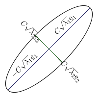

1.9 Spectral Decomposition
The study of the variation and interrelationships in multivariate data is often based on distances and
the assumption of multivariate normally data squared distances and multivariate normal density can
be expressed in terms of matrix products called quadratic forms.
Consequently, quadratic forms play a central role in multivariate analysis. One important result
involves the expansion of the symmetric matrix into what is known as spectral decomposition.
Theorem 1.10 (Spectral Decomposition theorem of Jordan Decomposition theorem). Any
symmetric matrix \(A_{p\times p}\) can be written as
\[A = E\Delta E' = \sum \lambda _i\underline {e}_i\underline {e}_j'\]
where \(\Delta \) is a diagonal matrix of eigenvalues of \(A\) and \(E\) is an orthogonal matrix whose columns are
standardized eigen vectors.
Proof. Suppose that we can find orthognormal vectors \(\underline {e}_1,\underline {e}_2,\cdots \cdots \cdots ,\underline {e}_p\) such that
\[A \underline {e}_i = \lambda _i \underline {e}_i\hspace {0.2cm} i = 1,2,\cdots \cdots \cdots , p\]
for some numbers \(\lambda _i\). Then
\[\underline {e}'_jA\underline {e}_i = \lambda _i \underline {e}'_j \underline {e}_i = \begin {cases} \lambda _i & i = j\\\\ 0 & i\neq j\\ \end {cases}\]
or in matrix form we have
\[E'AE = \Delta \hspace {0.5cm}\cdots \cdots \cdots \cdots \hspace {0.5cm} *\]
and pre and post multiply \(*\) by \(E\) and \(E'\) gives the result
\[A = E\Delta E'\]
where \(EE' = E'E = I_p\).
It is clear that \(\Delta \) has the same eigenvalues as \(A\).
□
Example 1.11. Recall that in the previous example we had \(\lambda _1 = 2, \hspace {0.5cm} \lambda _2 = 4, \hspace {0.5cm} \lambda _3 = -2\)
\[\underline {e}_1 = \begin {pmatrix} 0 & , & 0 & , & 1\\ \end {pmatrix}'\hspace {0.2cm},\hspace {1cm} \underline {e}_2 = \begin {pmatrix} \dfrac {1}{\sqrt {2}} & , & \dfrac {1}{\sqrt {2}} & , & 0\\ \end {pmatrix}'\hspace {0.2cm}, \hspace {1cm} \underline {e}_3 = \begin {pmatrix} \dfrac {1}{\sqrt {2}} & , & -\dfrac {1}{\sqrt {2}} & , & 0\\ \end {pmatrix}'\]
\(A = \begin {pmatrix} 1 & 3 & 0\\ 3 & 1 & 0\\ 0 & 0 & 2\\ \end {pmatrix}\) , a symmetric matrix
\begin {align*} & = 2 \begin {pmatrix} 0\\ 0\\ 1\\ \end {pmatrix}\begin {pmatrix} 0 & , & 0 & , & 1\\ \end {pmatrix} + 4 \begin {pmatrix} 1/\sqrt {2}\\ 1/\sqrt {2}\\ 0\\ \end {pmatrix}\begin {pmatrix} 1/\sqrt {2} & , & 1/\sqrt {2} & , & 0\\ \end {pmatrix} -2 \begin {pmatrix} 1/\sqrt {2}\\ -1/\sqrt {2}\\ 0\\ \end {pmatrix}\begin {pmatrix} 1/\sqrt {2} & , & -1/\sqrt {2} & , & 0\\ \end {pmatrix}\\\\ & = 2\begin {pmatrix} 0 & 0 & 0\\ 0 & 0 & 0\\ 0 & 0 & 1\\ \end {pmatrix} +4\begin {pmatrix} \dfrac {1}{2} & \dfrac {1}{2} & 0\\\\ \dfrac {1}{2} & \dfrac {1}{2} & 0\\\\ 0 & 0 & 0\\ \end {pmatrix}-2\begin {pmatrix} \dfrac {1}{2} & -\dfrac {1}{2} & 0\\\\ -\dfrac {1}{2} & \dfrac {1}{2} & 0\\\\ 0 & 0 & 0\\ \end {pmatrix}\\\\ & = \begin {pmatrix} 1 & 3 & 0\\ 3 & 1 & 0\\ 0 & 0 & 2\\ \end {pmatrix}\\\\ \end {align*}
1.9.2
Using the spectral decomposition it is rather easy to show that a \(p \times p\) symmetric matrix. \(A\) is a \(+ve\) definite
matrix if and only if every eigenvalue of \(A\) is \(+ve\). It is non-negative definite matrix if and only if all of its
eigenvalues are greater than or equal to zero.
1.9.1 Distance
We can think of \(A\) as a matrix of transformation and the square distance from a vector \(\underline {X}\) to an arbitrary fixed \(\underline {\mu }' = \begin {pmatrix} \mu _1 & , & \cdots \cdots \cdots , & \mu _p\\ \end {pmatrix}\) is given by \[d\big (\underline {X},\underline {\mu }\big ) = \big (\underline {X}-\underline {\mu }\big )' A\big (\underline {X}-\underline {\mu }\big )\] Using spectral decomposition we express the distance as \[d\big (\underline {X},\underline {\mu }\big ) =\big (\underline {X}-\underline {\mu }\big )'E\Delta E'\big (\underline {X}-\underline {\mu }\big )=\big [E'\big (\underline {X}-\underline {\mu }\big )\big ]'\Delta E'\big (\underline {X}-\underline {\mu }\big )\]
Let \(\underline {Y} = E'\big (\underline {X}-\underline {\mu }\big )\) \[d\big (\underline {X},\underline {\mu }\big ) = \underline {Y}\Delta \underline {Y}= \sum ^p_{i=1}\lambda _iY_i^2\]
For points at the distance of \(C\) units, we have the following \[\sum ^p_{i=1}\lambda _iY^2_i = C^2\] which form an equation of an ellipsoid centered at \(\underline {\mu } = \begin {pmatrix} \mu _1 & , & \cdots \cdots \cdots & , & \mu _p\\ \end {pmatrix}'\) and have axes \(\pm C\sqrt {\lambda _i}\underline {e}_i\), where \(A\underline {e}_i = \lambda _i \underline {e}_i\).

1.9.2 Square Root Matrix
The spectral decomposition allows us to express the inverse of the square matrix in terms of its
eigenvalues , vectors and thus leads to a useful square matrix.
Result 1.12. Recall that under the spectral decomposition a square matrix \(A_{p\times p}\) can be expressed
as
\(A = E\Delta E'\) where \(EE' = E'E = I\) so that \(E^{-1} = E'\)
Now \begin {align*} A^{-1} & = \big (E\Delta E'\big )^{-1}\hspace {2cm} \big (ABC\big )^{-1} = C^{-1}B^{-1}A^{-1}\\ & = \big (E'\big )^{-1}\Delta ^{-1} E^{-1}\\ & = \big (E^{-1}\big )^{-1}\Delta ^{-1}E'\\ & = E\Delta ^{-1}E'\\ \end {align*}
\[\text {So}\hspace {0.5cm} A^{-1} = E\Delta ^{-1} E' = \sum ^p_{i=1} \frac {1}{\lambda _i}\underline {e}_i\underline {e}'_i\hspace {0.5cm}\cdots \cdots \cdots \cdots \hspace {0.5cm} (1)\]
Let \(\Delta ^{1/2}\) denote the diagonal matrix with \(\sqrt {\lambda _i}\) as the \(i^{\text {th}}\) diagonal element
\[\text {e.g}\hspace {0.5cm} p=2\hspace {1cm} \Delta = \begin {pmatrix} \lambda _1 & 0 \\ 0 & \lambda _2\\ \end {pmatrix}\]
\[\Delta ^{1/2} = \begin {pmatrix} \sqrt {\lambda _1} & 0\\ 0 & \sqrt {\lambda _2}\\ \end {pmatrix}\]
Then the matrix \(\displaystyle {\sum ^p_{i=1}\sqrt {\lambda _i}\underline {e}_i\underline {e}'_j = E \Delta ^{1/2}E'}\hspace {0.2cm}\) is called the square root of \(A\) is denoted by \(A^{1/2}\).
The square - root matrix \[A^{1/2} = \sum ^p_{i=1}\lambda ^{1/2}_i\underline {e}_i\underline {e}'_j = E\Delta ^{1/2} E'\hspace {0.5cm}\cdots \cdots \cdots \cdots \hspace {0.5cm} (2)\] has the following properties
- 1.
- \(\big (A^{1/2}\big )' = A^{1/2}\)
\[\text {Since}\hspace {0.5cm}\big (A^{1/2}\big )' = \big (E\Delta ^{1/2}E'\big )' = \big (E'\big )'\big (\Delta ^{1/2}\big )'E' = E\Delta ^{1/2}E'\]
- 2.
- \(A^{1/2}\cdot A^{1/2} = A\) \begin {align*} \text {Since}\hspace {1cm} A^{1/2}\cdot A^{1/2} & = \big (E\Delta ^{1/2}E'\big )\big (E\Delta ^{1/2}E'\big ) = E\Delta ^{1/2}E'E\Delta ^{1/2}E'\\ & = E\Delta ^{1/2}I\Delta ^{1/2}E'\\ & = E \Delta ^{1/2}\Delta ^{1/2}E'\\ & = E \Delta E'\\ & = A\\ \end {align*}
- 3.
- \(\displaystyle {\big (A^{1/2}\big )^{-1} = \sum ^p_{i=1}\frac {1}{\sqrt {\lambda _i}}\underline {e}_i\underline {e}_j' = E\Delta ^{-1/2}E' = A^{-1/2}}\) where \(\Delta ^{-1/2}\) is a diagonal matrix with \(\dfrac {1}{\sqrt {\lambda _i}}\) has the \(i^{\text {th}}\) diagonal element.
- 4.
- \(A^{1/2}\cdot A^{-1/2} = A^{-1/2}\cdot A^{1/2} = I\)
- 5.
- \(\displaystyle {A^{-1/2}\cdot A^{-1/2}= A^{-1}}\) where \(\big (A^{1/2}\big )^{-1} = A^{-1/2}\)
Example 1.13. Let \(A = \begin {pmatrix} 4 & \sqrt {3}\\ \sqrt {3} & 2\\ \end {pmatrix}\). So \(A' = A\)
Characteristic function \(\begin {vmatrix} 4 - \lambda & \sqrt {3}\\ \sqrt {3} & 2-\lambda \\ \end {vmatrix} = 0\) \begin {align*} \implies \hspace {1cm} (4 - \lambda ) (2 - \lambda ) - 3 & = 0\\ \lambda ^2 - 6\lambda + 5 & =0\\ \implies \hspace {0.5cm} (\lambda -5)(\lambda - 1) & =0\\ \end {align*}
\[\therefore \hspace {1cm} \lambda _1 =5\hspace {0.2cm},\hspace {0.5cm} \lambda _2 = 1\]
Eigen vectors
For \(\lambda = 5\) \begin {align*} A\underline {e}_i & = \lambda _i \underline {e}_i\\\\ \begin {pmatrix} 4 & \sqrt {3}\\ \sqrt {3} & 2\\ \end {pmatrix}\begin {pmatrix} e_1\\ e_2\\ \end {pmatrix} & = 5\begin {pmatrix} e_1\\ e_2\\ \end {pmatrix} \end {align*}
\begin {align*} 4e_1 + \sqrt {3}e_2 & = 5e_1\\ \sqrt {3}e_1 + 2e_2 & = 5e_2\\ \end {align*}
\[\implies \hspace {1cm} e_1 = \sqrt {3}e_2\]
Choose \(e_2 =1,\) \(\hspace {0.4cm} e_1 = \sqrt {3}\hspace {1cm}\implies \underline {e}_1^* = \begin {pmatrix} \sqrt {3} & , & 1\\ \end {pmatrix}'\)
\[\underline {e}_1 = \begin {pmatrix} \dfrac {\sqrt {3}}{2} & , & \dfrac {1}{2}\\ \end {pmatrix}'\]
For \(\lambda = 1\) \[A\underline {e}_2 = \lambda _2 \underline {e}_2\]
\begin {align*} 4e_1 + \sqrt {3}e_2 & = e_1\\ \sqrt {3}e_1 + 2e_2 & = e_2\\ \end {align*}
\[\implies \hspace {1cm} \sqrt {3}e_1 = -e_2\]
Choose \(e_1 =1,\hspace {0.5cm} e_2 = -\sqrt {3}\hspace {1cm} \implies \underline {e}^*_2 = \begin {pmatrix} 1 & , & -\sqrt {3}\\ \end {pmatrix}'\)
\[\underline {e}_2 = \begin {pmatrix} \dfrac {1}{2} & , & -\dfrac {\sqrt {3}}{2}\\ \end {pmatrix}'\]
\[E = \begin {pmatrix} \dfrac {\sqrt {3}}{2} & \dfrac {1}{2}\\\\ \dfrac {1}{2} & -\dfrac {\sqrt {3}}{2}\\ \end {pmatrix}\hspace {2cm} \Delta = \begin {pmatrix} 5 & 0\\ 0 & 1\\ \end {pmatrix} \]
Square root of \(A\) \begin {align*} A^{1/2} & = E\Delta ^{1/2}E'\\\\ A^{1/2} & = \begin {pmatrix} \dfrac {\sqrt {3}}{2} & \dfrac {1}{2}\\\\ \dfrac {1}{2} & -\dfrac {\sqrt {3}}{2}\\ \end {pmatrix}\begin {pmatrix} \sqrt {5} & 0\\ 0 & 1\\ \end {pmatrix}\begin {pmatrix} \dfrac {\sqrt {3}}{2} & \dfrac {1}{2}\\\\ \dfrac {1}{2} & -\dfrac {\sqrt {3}}{2}\\ \end {pmatrix}\\\\ & = \begin {pmatrix} \dfrac {\sqrt {15}}{2} & \dfrac {1}{2}\\\\ \dfrac {\sqrt {5}}{2} & -\dfrac {\sqrt {3}}{2}\\ \end {pmatrix}\begin {pmatrix} \dfrac {\sqrt {3}}{2} & \dfrac {1}{2}\\\\ \dfrac {1}{2} & -\dfrac {\sqrt {3}}{2}\\ \end {pmatrix}\\\\ & = \begin {pmatrix} \dfrac {\sqrt {45} + 1}{4} & \dfrac {\sqrt {15}-\sqrt {3}}{4}\\\\ \dfrac {\sqrt {15}-\sqrt {3}}{4} & \dfrac {\sqrt {5}+3}{4}\\\\ \end {pmatrix} \end {align*}
Verifications
- 1.
- \(\big (A^{1/2}\big )' = A^{1/2}\)
- 2.
-
\[A^{1/2}\cdot A^{1/2} = \begin {pmatrix} \dfrac {\sqrt {45} + 1}{4} & \dfrac {\sqrt {15}-\sqrt {3}}{4}\\\\ \dfrac {\sqrt {15}-\sqrt {3}}{4} & \dfrac {\sqrt {5}+3}{4}\\\\ \end {pmatrix} \begin {pmatrix} \dfrac {\sqrt {45} + 1}{4} & \dfrac {\sqrt {15}-\sqrt {3}}{4}\\\\ \dfrac {\sqrt {15}-\sqrt {3}}{4} & \dfrac {\sqrt {5}+3}{4}\\\\ \end {pmatrix} \]
\begin {align*} a_{11} & = \Bigg (\dfrac {\sqrt {14}+1}{4}\Bigg )^2 + \Bigg (\dfrac {\sqrt {15}-\sqrt {3}}{4}\Bigg )^2\\\\ & = \dfrac {45 + 1 + 2\sqrt {45}}{16} + \dfrac {15 + 3 - 2\sqrt {45}}{16}\\\\ & = \dfrac {64}{16}\\\\ & =4\\ \end {align*}
\begin {align*} a_{12} & = \frac {(\sqrt {45}+1)(\sqrt {15}-\sqrt {3})}{16}+\frac {(\sqrt {15}-\sqrt {3})(\sqrt {5}+3)}{3}=a_{21}\\ & = \frac {3\sqrt {75}-3\sqrt {15}+\sqrt {15}-\sqrt {3}}{16}+ \frac {\sqrt {75}+3\sqrt {15}-\sqrt {15}-3\sqrt {3}}{16}\\ & = \frac {4\sqrt {75}-4\sqrt {3}}{16}\\ & = \frac {5\sqrt {3}-\sqrt {3}}{4}\\ & = \sqrt {3}\\ \end {align*}
\begin {align*} a_{22} & = \Bigg (\frac {\sqrt {15}-\sqrt {3}}{4}\Bigg )\Bigg (\frac {\sqrt {15}-\sqrt {3}}{4}\Bigg )+\Bigg (\frac {\sqrt {5}+3}{4}\Bigg )\Bigg (\frac {\sqrt {5}+3}{4}\Bigg )\\ & = \frac {15-\sqrt {15}\sqrt {3}-\sqrt {15}\sqrt {3}+3}{16}+\frac {5+3\sqrt {5}+3\sqrt {5}+9}{16}\\ & = \frac {15-2\sqrt {45}+3+5+6\sqrt {5}+9}{16}\\ & = \frac {32-6\sqrt {5}+6\sqrt {5}}{16}\\ & = 2\\ \end {align*}
\[ \begin {pmatrix} 4 & \sqrt {3}\\ \sqrt {3} & 2\\ \end {pmatrix} = A\hspace {1cm} \text {Hence}\hspace {0.3cm} A^{1/2}A^{1/2} = A \]
Questions on this section
Stuck on something here? Ask below and it stays attached to this topic.